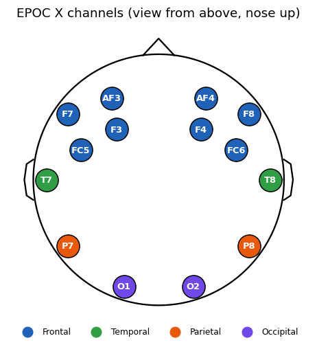

From neurons to numbers#
Learning objectives
- Explain what an EEG electrode measures and why the signal is a voltage difference.
- Describe the acquisition chain from scalp to CSV and name the steps that shape the data (amplification, high-pass, ADC, decimation).
- Read an electrode name in the 10–20 system and locate the 14 channels of the Emotiv EPOC X on a head map.
- List the classical EEG rhythms and the main artifacts you will meet in the lab.
Before any statistics or filtering, a data analyst must be able to answer one question: what physical process generated these numbers? This point builds that mental model. Everything in the next chapters (sampling, spectra, filters, quality metrics) is a consequence of it.
What does an EEG electrode measure?#
The cerebral cortex contains millions of pyramidal neurons arranged in parallel columns. When many of them receive synaptic input at about the same time, their small ionic currents add up into an equivalent current dipole. The resulting electric field spreads through cerebrospinal fluid, skull and scalp (a process called volume conduction) and creates tiny potential differences on the scalp surface, of the order of 10–100 µV. For comparison, an electrocardiogram (ECG) is around 1 mV, roughly ten to a hundred times larger.
Three consequences shape the data you will analyse:
- Weak amplitude. Any other electrical source (eye blink, jaw muscle, cable movement, mains power) can be as large as or larger than the brain signal. These are artifacts.
- Spatial smoothing. Skull and scalp blur the field, so neighbouring electrodes record strongly correlated mixtures of the same sources. We will measure this in point 5.
- Temporal structure. Neural populations oscillate, so the interesting information lives in frequency bands rather than in individual samples. This is why point 6 to 8 are about the Fourier transform.
Definition: Electroencephalogram (EEG)
An EEG is the time series of the electric potential difference between an active scalp electrode and a reference, sampled at regular instants. For channel \(k\) and sample index \(n\) we write \(x_k[n] = v_k(nT_s)\), where \(T_s = 1/f_s\) is the sampling period.
A linear mixing model#
A simple but powerful way to think about the recording is that each electrode sees a weighted sum of underlying sources plus noise:
\[ x_k[n] \;=\; \sum_{j=1}^{J} a_{kj}\, s_j[n] \;+\; \varepsilon_k[n], \qquad k = 1,\dots,14 . \]Here \(s_j\) are the (unknown) neural and artifact sources, \(a_{kj}\) is how strongly source \(j\) projects to electrode \(k\) (it decays with distance), and \(\varepsilon_k\) (collected in the vector \(\mathbf{e}\)) is sensor noise. In matrix form, \(\mathbf{x}[n] = A\,\mathbf{s}[n] + \mathbf{e}[n]\). The same model underlies principal component analysis (PCA), which you will apply in the final lab.
Always a difference
A scalp potential has no absolute value, only a difference with respect to something. On the EPOC X, two extra reference sensors (called CMS and DRL) form a driven reference loop that also reduces common-mode interference. They do not appear as columns in the CSV: the 14 EEG columns are already expressed relative to that reference.
From scalp to CSV: the acquisition chain#
Each number in the file went through the following stages. Knowing them lets you predict what the data cannot contain (for example, very slow drifts or frequencies above about 43 Hz).
The table summarises the published characteristics of the EPOC X headset. They come from the manufacturer's documentation (check the current datasheet for your firmware); we will verify several of them directly on the data in Chapters 3 and 4.
| Property | Published value (EPOC X) | What to verify in the file |
|---|---|---|
| EEG channels | 14, plus 2 reference sensors | 14 columns eeg.af3 … eeg.af4 |
| Sampling rate | 128 or 256 samples per second (selectable) | Estimate from the time stamps (Section 3) |
| Resolution | 14 effective bits, about 0.51 µV per step | Amplitude scale of the values (µV) |
| Bandwidth | about 0.16 to 43 Hz | Spectrum drops sharply above 43 Hz (Section 8) |
| Mains filters | Digital notch at 50 and 60 Hz | No 50 Hz peak in the spectrum (Section 7) |
| Motion sensors | 9-axis inertial unit | mot.* columns (Section 2) |
| Sensor type | Semi-dry saline felts | Contact-quality columns cq.* (Section 4) |
Watch out
The EPOC X is a consumer-grade research headset. It has only 14 electrodes, no central sites (Cz, C3, C4), moist felt sensors and much weaker control of impedance and motion than a clinical amplifier. In this lab you will see these limits in the data: this is part of the learning, and a good biomedical engineer always reports them.
The 14 channels and the 10–20 system#
The 10–20 system places electrodes at 10% or 20% steps along the nasion–inion and ear-to-ear arcs, so that names mean the same thing on every head. Reading a name is easy:
- The letters give the region:
Fpfrontal pole,AFbetween frontal pole and frontal,Ffrontal,FCfronto-central,Ttemporal,Pparietal,Ooccipital. - The number gives the hemisphere: odd = left, even = right,
z= midline. Larger numbers lie farther from the midline. - Modern notation writes
T7/T8/P7/P8instead of the olderT3/T4/T5/T6.
The code below stores a schematic 2D position for each channel (viewed from above, nose up). We will reuse the dictionary POS and the function draw_head for correlation-versus-distance plots (Chapter 5) and for scalp maps (Chapters 8 and 9).
import numpy as np
import pandas as pd
import matplotlib.pyplot as plt
# Schematic electrode positions: (angle from the nose in degrees, radius), 10-20 flat map.
# Order = order of the 14 EEG columns in the CSV file.
POLAR = {"af3": (-30, .43), "f7": (-54, .511), "f3": (-40, .30), "fc5": (-69, .38),
"t7": (-90, .511), "p7": (-126, .511), "o1": (-162, .511), "o2": (162, .511),
"p8": (126, .511), "t8": (90, .511), "fc6": (69, .38), "f4": (40, .30),
"f8": (54, .511), "af4": (30, .43)}
CH = list(POLAR) # ['af3', 'f7', 'f3', ...]
POS = {ch: (r * np.sin(np.deg2rad(a)) / .511, r * np.cos(np.deg2rad(a)) / .511)
for ch, (a, r) in POLAR.items()} # x to the right, y toward the nose
REGION = {"af3": "Frontal", "af4": "Frontal", "f3": "Frontal", "f4": "Frontal", "f7": "Frontal", "f8": "Frontal",
"fc5": "Frontal", "fc6": "Frontal", "t7": "Temporal", "t8": "Temporal",
"p7": "Parietal", "p8": "Parietal", "o1": "Occipital", "o2": "Occipital"}
COLORS = {"Frontal": "#1f62b8", "Temporal": "#2f9e44", "Parietal": "#e8590c", "Occipital": "#7048e8"}
def draw_head(ax, r=1.12):
"""Head outline (circle, nose, ears) in the same units as POS."""
t = np.linspace(0, 2 * np.pi, 200)
ax.plot(r * np.cos(t), r * np.sin(t), "k", lw=1.5)
ax.plot([-.14, 0, .14], [r - .01, r + .14, r - .01], "k", lw=1.5) # nose
for s in (-1, 1): # ears
ax.plot(s * (r + np.array([0, .06, .08, .06, 0])), np.array([.18, .14, 0, -.14, -.18]), "k", lw=1.5)
ax.set_xlim(-1.35, 1.35); ax.set_ylim(-1.3, 1.4); ax.set_aspect("equal"); ax.axis("off")
fig, ax = plt.subplots(figsize=(5.2, 5.2))
draw_head(ax)
for ch, (x, y) in POS.items():
ax.scatter(x, y, s=470, color=COLORS[REGION[ch]], edgecolor="k", zorder=3)
ax.text(x, y, ch.upper(), ha="center", va="center", color="w", fontsize=8.5, weight="bold", zorder=4)
for reg, col in COLORS.items():
ax.scatter([], [], s=90, color=col, label=reg)
ax.legend(loc="lower center", ncol=4, frameon=False, bbox_to_anchor=(.5, -.06), fontsize=8)
ax.set_title("EPOC X channels (view from above, nose up)")
plt.show()

Left-hemisphere sites (odd numbers) mirror right-hemisphere sites (even numbers): AF3/AF4, F3/F4, F7/F8, FC5/FC6, T7/T8, P7/P8, O1/O2. This symmetry gives seven homologous pairs, which we will exploit for paired statistical tests in Chapter 5.
EEG rhythms#
The spectrum of the EEG is traditionally divided into bands. The boundaries vary slightly between textbooks. Here we use the convention that will be coded in Chapter 8.
| Band | Range (Hz) | Typical context | Caveat with this headset |
|---|---|---|---|
| Delta (δ) | 0.5 – 4 | Deep sleep; slow cortical potentials | Contaminated by blinks, sweat and cable movement |
| Theta (θ) | 4 – 8 | Drowsiness, memory and attention load | Blinks and slow eye movements leak in at frontal sites |
| Alpha (α) | 8 – 13 | Relaxed wakefulness, eyes closed, strongest over occipital cortex | The easiest rhythm to see; here the peak sits near the upper edge |
| Beta (β) | 13 – 30 | Active thinking, motor planning | Muscle activity (EMG) overlaps this band |
| Gamma (γ) | 30 – 45 | High-level processing, binding | Mostly muscle and noise in dry/semi-dry systems; cut by the 43 Hz bandwidth |
Artifacts: everything that is not the brain#
An artifact is any signal component that does not come from the neural process of interest. Recognising their signature is a core skill, because they dominate the amplitude statistics.
| Artifact | Source | Signature in the data | Where it shows |
|---|---|---|---|
| Eye blink | Corneo-retinal dipole moves with the eyelid | Large (100–300 µV) smooth deflection of about 0.2–0.4 s | Frontal: AF3, AF4, F3, F4 |
| Eye movement | Same dipole rotating | Slow steps of opposite sign on the left and right | F7, F8 |
| Muscle (EMG) | Jaw, forehead, neck tension | Broadband power above 20 Hz, spiky and irregular | Temporal and frontal |
| Motion / cable | Electrode sliding on the scalp | Very large slow drifts and sudden jumps | All channels, often worst at poor contacts |
| Electrode pop | Sudden change of contact impedance | Abrupt step followed by decay | A single channel |
| Mains interference | Power lines (50 Hz in Europe) | Narrow spectral line at 50 Hz | Poorly contacted channels |
Self-check: Which pair of channels should show eye blinks with the largest amplitude?
Exercise: Think before you code
The file contains no column telling you when the subject blinked or closed their eyes. Name two features computed from the data that could help you find blinks automatically, and say which channels you would use.
Show solution
Examples: (1) a threshold on the peak-to-peak amplitude within a 1-second window of AF3/AF4 (blinks exceed 100 µV); (2) the ratio of delta-band power (0.5–4 Hz) to total power at AF3/AF4, since a blink is a slow, high-energy deflection; (3) the difference AF3 − O1 to emphasise sources near the eyes. We will compute amplitude- and band-based features in Chapters 4 and 8.